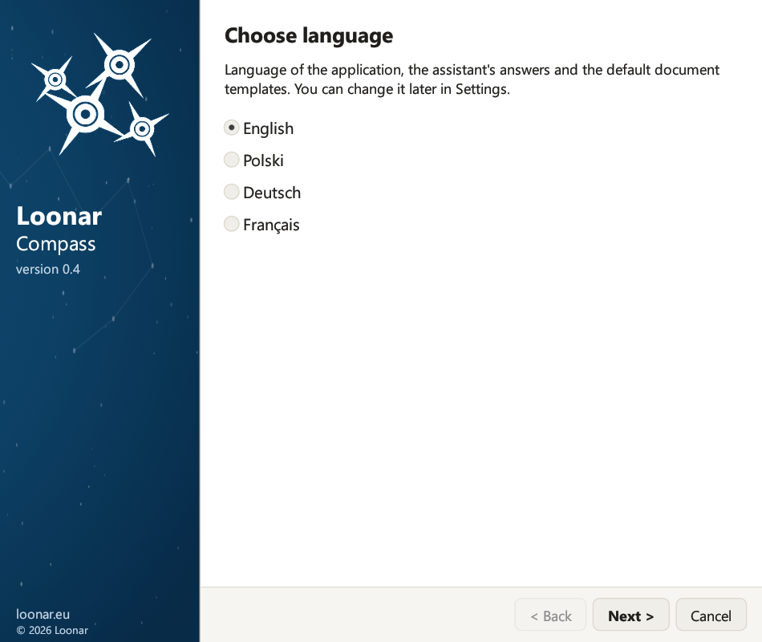

Ceci est la documentation de la version 0.5. La version la plus récente est la 0.7 : voir la documentation la plus récente
Guide d'installation
2. Configuration requise
- Le modèle est un fichier de projet EA .qea ou .qeax, ou se trouve dans une base de données PostgreSQL. Les anciens formats de fichier (.eap, .eapx, .feap) et les autres bases ne sont pas pris en charge ; Enterprise Architect convertit un fichier .eap/.eapx en .qea par un transfert de projet (Settings → Model → Transfer → Full Project Transfer).
- Dans un modèle en base de données, la sécurité utilisateur est activée (dans Enterprise Architect : Settings → Security → Enable Security), en mode « Require User Lock to Edit ». Dans un fichier de modèle, la sécurité est facultative : sans elle, l'assistant n'a besoin d'aucun compte EA. L'application se connecte au modèle en tant qu'utilisateur précis et pose des verrous pendant l'enregistrement ; lorsque la sécurité est désactivée, les verrous sont ignorés et cette configuration n'est pas prise en charge.
- Un modèle dont la sécurité est activée contient un compte utilisateur pour l'assistant (Settings → Security → Users), avec un mot de passe et des droits de modification. Le nom du compte est libre, par exemple
claudeouassistant, mais le compte doit exister. Vous saisissez son identifiant et son mot de passe dans les paramètres de l'application.
| Élément | Détails |
|---|---|
| Système | Windows 10 ou Windows 11 (64 bits) |
| Enterprise Architect | Installé sur le même ordinateur, avec une licence valide. L'application le lance en arrière-plan ; pendant ce temps, il occupe une place de licence. |
| Modèle EA | Fichier de projet EA .qea ou .qeax (seul son chemin est nécessaire) ou référentiel dans une base PostgreSQL avec la sécurité utilisateur activée (informations nécessaires : serveur, port, nom de la base, compte et mot de passe de la base). Un fichier .qea est destiné à une seule personne ; un fichier .qeax à une petite équipe qui partage le fichier. |
| Compte utilisateur du modèle | Pour un modèle en base de données ou un fichier de modèle dont la sécurité est activée : identifiant et mot de passe d'un utilisateur défini dans le modèle EA. De préférence un compte distinct réservé à l'assistant, afin que ses modifications et ses verrous soient visibles séparément et n'entrent pas en conflit avec les vôtres. |
| Clé API Claude | Une clé de la console Anthropic. |
| Internet | Connexion HTTPS à api.anthropic.com, directement ou via le proxy défini dans Windows (chapitre 14). |
| Confluence (facultatif) | Confluence Cloud ou Data Center, uniquement pour la publication de pages par l'assistant : adresse Confluence, jeton et clé de l'espace (chapitre 9). Sans cela, les pages sont tout de même créées, et vous collez le code vous-même. |
| Logiciel de messagerie (facultatif) | Pour signaler des bugs et s'abonner aux informations sur les nouvelles versions : un logiciel de messagerie défini par défaut dans Windows, par exemple Outlook. |
3. Installation
Lancez le fichier LoonarCompass-Setup-0.5.exe. L'assistant d'installation vous guide à travers les étapes avec les boutons Suivant et Précédent. Des droits d'administrateur ne sont nécessaires que si vous installez l'application pour tous les utilisateurs de l'ordinateur.

- Langue. La première page demande la langue : polonais, anglais, allemand ou français. Lors d'une nouvelle installation, l'anglais est présélectionné ; lors d'une mise à jour, la langue enregistrée dans vos paramètres. La langue choisie s'applique à l'assistant d'installation, à l'application, aux réponses de l'assistant et aux modèles de documents par défaut ; vous pourrez la modifier plus tard dans les paramètres (chapitre 5).
- Accueil. Les prérequis et la liste des éléments à préparer avant l'installation.
- Nouveautés. Lors d'une mise à jour : les modifications depuis la version installée. Lors d'une nouvelle installation : les principales modifications de la version actuelle.
- Contrat de licence. Cochez « J'accepte les conditions du contrat de licence ».
- Dossier de destination. Le type d'installation (décrit ci-dessous), le dossier du programme (le bouton Parcourir… permet d'en choisir un autre) et les raccourcis : menu Démarrer (application, guide de l'utilisateur, désinstallation) et bureau.
- Configuration. Vous pouvez saisir tout de suite les données (« Je saisis les données maintenant ») ou les compléter plus tard dans l'application. Les champs : la clé API Claude (avec une note sur ce qui est envoyé à Anthropic), le modèle (une base PostgreSQL : serveur, port, nom de la base, compte et mot de passe de la base ; ou un fichier EA : le chemin du fichier .qea/.qeax, que vous pouvez sélectionner avec le bouton …), le chemin d'
EA.exe(le bouton … ouvre une fenêtre de sélection de fichier), le compte utilisateur EA et son mot de passe, ainsi que le mode de validation. Un champ de mot de passe ou de clé laissé vide conserve la valeur enregistrée précédemment. - Prêt pour l'installation. Le récapitulatif du type d'installation, du dossier, des raccourcis et de la configuration. Cliquez sur Installer ; la barre de progression affiche le pourcentage et l'étape en cours.
- Fin. Si « Lancer Loonar Compass » est coché, l'application s'ouvre après un clic sur Terminer.

Type d'installation
Sur la page « Dossier de destination », vous choisissez pour qui vous installez l'application :
- « Pour moi uniquement (recommandé, sans droits d'administrateur) » : le programme est installé dans le dossier
%LOCALAPPDATA%\Programs\Loonar Compass. Windows ne demande pas de droits d'administrateur. - « Pour tous les utilisateurs de cet ordinateur (nécessite des droits d'administrateur) » : le programme est installé dans le dossier
%ProgramFiles%\Loonar Compass, où seuls les administrateurs peuvent modifier les fichiers. Windows ne demande des droits d'administrateur qu'après un clic sur Installer. Si vous ne les accordez pas, rien n'est installé.
Quel que soit le type d'installation, les paramètres et les secrets sont toujours enregistrés pour l'utilisateur Windows connecté. Dans une installation pour tous les utilisateurs, chacun a ses propres paramètres, conversations et mots de passe.

Mise à jour depuis une version antérieure
Loonar Compass s'appelait auparavant Loonar EA Assistant : les paramètres, les conversations, la mémoire, les modèles de documents et les mots de passe de Loonar EA Assistant sont repris automatiquement.
- Une ancienne version installée pour vous uniquement est supprimée pendant l'installation (fichiers du programme, raccourcis et entrée dans les paramètres de Windows) ; vos données sont conservées.
- Si l'ancienne version a été installée pour tous les utilisateurs, la page « Prêt pour l'installation » l'indique et propose le bouton Supprimer l'ancienne version (droits d'administrateur) ; vous pouvez aussi la supprimer plus tard dans les paramètres de Windows (Applications). Vos paramètres et vos conversations sont conservés.
- Lors d'une mise à jour depuis la version 0.1 ou 0.2, l'assistant d'installation présélectionne la langue enregistrée dans les paramètres, ou l'anglais si aucune langue n'y figure : vérifiez ce choix avant de cliquer sur Suivant.
- Un changement de langue dans le programme d'installation ne traduit ni la mémoire ni les modèles de documents. Pour les traduire, conservez la langue actuelle dans le programme d'installation, puis changez-la dans la carte 4 des paramètres (chapitre 5).
- Le mot de passe de la base, que les anciennes versions conservaient dans le fichier de paramètres, est transféré dans le Gestionnaire d'identification Windows, et les fichiers aux noms polonais du dossier des données reçoivent des noms anglais (par exemple
audit_log.jsonlettemplates).
17. Mise à jour et désinstallation
Mise à jour. Fermez l'application et lancez le programme d'installation de la nouvelle version. L'assistant d'installation affiche la page « Nouveautés de la version … » avec les modifications depuis la version installée, conserve le type et le dossier de l'installation existante, ainsi que vos paramètres, l'historique des conversations, les pièces jointes, la mémoire, les modèles et le journal des modifications. Pour une mise à jour depuis l'ancienne version, voir le chapitre 3.
Fermeture de l'application. La fermeture de la fenêtre ferme aussi la session Enterprise Architect lancée en arrière-plan par l'application, de sorte que la licence EA est libérée immédiatement.
Désinstallation. Fermez l'application. Utilisez le raccourci « Désinstaller Loonar Compass » du menu Démarrer ou l'entrée « Loonar Compass » dans les paramètres de Windows (Applications → Applications installées). Pour une installation destinée à tous les utilisateurs, Windows demande des droits d'administrateur. Le programme de désinstallation supprime les fichiers du programme, les raccourcis et l'entrée système, en affichant la progression sur une barre. Vos données sont conservées, sauf si vous cochez :
- « Supprimer les paramètres, les conversations, les pièces jointes, la mémoire de l'assistant, les modèles de documents et le journal des modifications » : le dossier
%APPDATA%\Loonar Compassest alors supprimé en entier, - « Supprimer la clé API, les mots de passe et les jetons du Gestionnaire d'identification » : tous les secrets, y compris le jeton Confluence et le mot de passe de la base.
Pour une installation destinée à tous les utilisateurs, seules vos propres données sont supprimées ; celles des autres utilisateurs restent dans leur profil.